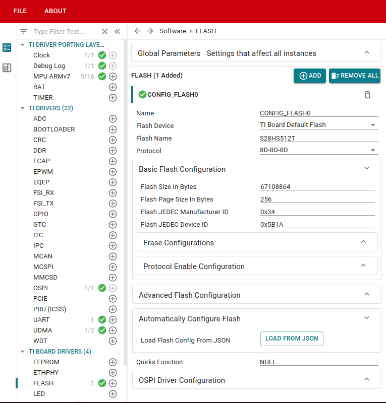
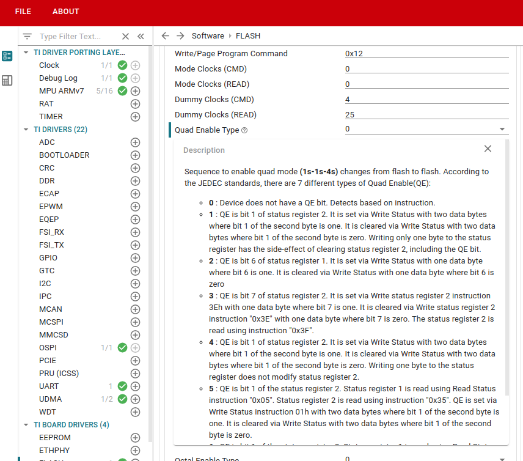
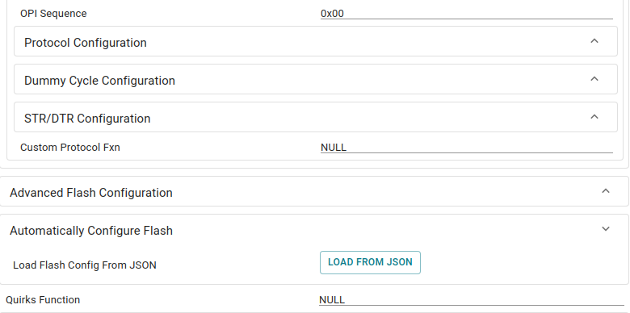

Introduction
The flash driver in the SDK is supposed to work based on a configuration structure passed on the driver during the initialization time. This configuration structure has been chosen to support the configuration models of a number of flashes from multiple vendors. Currently, this configuration is generated by SysConfig from the options provided in the SysConfig Flash Module. This guide details the steps to bring up a custom flash using these tools and methods provided in the SDK. In a later version a method will be provided to do this without SysConfig as well.
The configuration structure can be obtained albeit automatically if the flash supports SFDP (Serial Flash Discoverable Parameter) table.
Serial Flash Discoverable Parameters (SFDP)
The Serial Flash Discoverable Parameters (SFDP) is a standard which provides a consistent method of describing the functional and feature capabilities of the flash device in a standard set of internal parameter tables. This table can be queried to identify the configurations and adjustments needed to set the flash in a desired state.
The parsing of the SFDP table is time consuming. Considering this, the SFDP parsing feature in this SDK is tied with a diagnostic example of the OSPI driver. In flashes where the SFDP is supported, this example can be used to parse the details into a config structure which can aid bringing up the custom flash. As of now the SFDP parsing in the SDK supports upto JEDS216D standard.
Summary of steps needed to enable a new flash device
- Step 1: Build the
ospi_flash_diag example : OSPI Flash Diagnostic. This example communicates with the flash in 1S-1S-1S mode and queries the flash for the SFDP table (if SFDP is supported by the flash) among other things. The logs from this example would be required later to configure the flash driver.
- Step 2: Open the SysConfig GUI for the example/application you want to try with your flash and enter the details manually using the flash datasheet or using the JSON from
ospi_flash_diag log. Save this SysConfig configuration.
Now you can test your example/application with the new flash device! Also test the configuration with OSPI bootloader SBL OSPI and flash writer SBL UART Flash Writer by flashing an example Flash a Hello World example. Let's get into the details of the steps.
Step 1: Building the OSPI Flash Diagnostic example
Refer the example page OSPI Flash Diagnostic on building this application. You will need have to initialize the SOC in no boot mode as mentioned in SOC Initialization Using CCS Scripting and also load and run this example using CCS, as mentioned in CCS Launch, Load and Run. Building and running the OSPI Flash Diagnostic example is important because regardless of flash supporting SFDP or not, the diagnostic example gives a basic sanity for the flash. If the flash diagnostic doesn't work, there could be HW connection issues most probably. When you successfully build and run the example, you should get a log something like this:
[OSPI Flash Diagnostic Test] Starting ...
[OSPI Flash Diagnostic Test] Flash Manufacturer ID : 0x34
[OSPI Flash Diagnostic Test] Flash Device ID : 0x5B1A
[OSPI Flash Diagnostic Test] Executing Flash Erase on first block...
[OSPI Flash Diagnostic Test] Done !!!
[OSPI Flash Diagnostic Test] Performing Write-Read Test...
[OSPI Flash Diagnostic Test] Write-Read Test Passed!
[QSPI Flash Diagnostic Test] SFDP Information :
================================================
SFDP
================================================
SFDP Major Revision : 0x1
SFDP Minor Revision : 0x8
Number of Parameter Headers in this Table : 6
Types of Additional Parameter Tables in this flash
---------------------------------------------------
4 BYTE ADDRESSING MODE INSTRUCTIONS TABLE
NOR SPI PROFILE TABLE
STATUS CONTROL AND CONFIGURATION REGISTER MAP TABLE
OCTAL DDR MODE COMMAND SEQUENCE TABLE
SECTOR MAP TABLE
Parsing of OCTAL DDR MODE COMMAND SEQUENCE TABLE table not yet supported.
JSON Data for the flash :
{
"flashSize": 67108864,
"flashPageSize": 256,
"flashManfId": "0x34",
"flashDeviceId": "0x5B1A",
"flashBlockSize": 262144,
"flashSectorSize": 4096,
"cmdBlockErase3B": "0xDC",
"cmdBlockErase4B": "0xDC",
"cmdSectorErase3B": "0x21",
"cmdSectorErase4B": "0x21",
"protos": {
"p111": {
"isDtr": false,
"cmdRd": "0x03",
"cmdWr": "0x02",
"modeClksCmd": 0,
"modeClksRd": 0,
"dummyClksCmd": 0,
"dummyClksRd": 0,
"enableType": "0",
"enableSeq": "0x00",
"dummyCfg": null,
"protoCfg": null,
"strDtrCfg": null
},
"p112": null,
"p114": null,
"p118": null,
"p444s": null,
"p444d": null,
"p888s": null,
"p888d": {
"isDtr": true,
"cmdRd": "0xEE",
"cmdWr": "0x12",
"modeClksCmd": 0,
"modeClksRd": 0,
"dummyClksCmd": 4,
"dummyClksRd": 24,
"enableType": "0",
"enableSeq": "0x00",
"dummyCfg": {
"isAddrReg": true,
"cmdRegRd":"0x65",
"cmdRegWr":"0x71",
"cfgReg":"0x00800003",
"shift":0,
"mask":"0x03",
"bitP":11
},
"protoCfg": {
"isAddrReg": true,
"cmdRegRd": "0x65",
"cmdRegWr": "0x71",
"cfgReg": "0x00800006",
"shift": 0,
"mask": "0x00",
"bitP": 0
},
"strDtrCfg": {
"isAddrReg": true,
"cmdRegRd": "0x65",
"cmdRegWr": "0x71",
"cfgReg": "0x00800006",
"shift": 1,
"mask": "0x00",
"bitP": 1
}
},
"pCustom": {
"fxn": null
}
},
"addrByteSupport": "1",
"fourByteAddrEnSeq": "0xA0",
"cmdExtType": "REPEAT",
"resetType": "0x10",
"deviceBusyType": "1",
"cmdWren": "0x06",
"cmdRdsr": "0x05",
"srWip": 0,
"srWel": 1,
"cmdChipErase": "0xC7",
"rdIdSettings": {
"cmd": "0x9F",
"numBytes": 5,
"dummy4": 0,
"dummy8": 0
},
"xspiWipRdCmd": "0x65",
"xspiWipReg": "0x00800000",
"xspiWipBit": 0,
"flashDeviceBusyTimeout": 256000000,
"flashPageProgTimeout": 512
}
All tests have passed!!
You can see that the prints include the major and minor revisions of the SFDP standard supported. The diagnostic will print the SFDP details for this version only. As mentioned above, currently it supports till JESD216D version.
Between the lines JSON Data for the flash and All tests have passed, you can see the configuration data for the flash printed as a json. You will see this if your flash supports SFDP. In this case, copy this part save it as JSON file, this would be useful in Step 2. In fact, the TI Board Default Flash configuration is also saved as json.
Step 2: Configuring the flash via SysConfig

Flash SysConfig Module GUI
As you can see in the above image, there are various configurations options available for the flash.
- Start with setting the
Flash Device as custom flash instead of TI Board Default Flash.
- Enter the name of your flash part in the next configurable and select the protocol from the next drop down. If the required protocol is not supported, there is also an option to choose the data lines for CMD, ADDR and DATA sections of the flash datagram.
Rest of the configuration depends on whether the flash supports SFDP or not.
Case 1: Flash Supports SFDP
If your flash supports SFDP and the ospi_flash_diag example is able to print out the SFDP table as shown in Step 1, configuring the flash in your example via SysConfig is quite easy.
- To use the JSON file, scroll down to the section which says "Automatically Configure Flash". Now click on the
LOAD FROM JSON button which will open a file dialog.
- Browse to the JSON file saved in Step 1 and select it. SysConfig should "load" data from the file into the GUI.
- You can cross verify the values with datasheet if required, but mostly this won't be necessary.
Case 2: Flash Doesn't Support SFDP
If your flash doesn't support SFDP, the flash configuration details would need to be filled in manually. This can be a pain point, but mostly flashes without SFDP support wouldn't have a lot of configuration as well. Only basic things like quad bit enable, etc would need to be looked up in the datasheet.
Most of the configurables should be self explanatory. Still if some terms seem confusing, look for a question mark icon near the configurable when you hover. Clicking on that should give the long description regarding a certain configurable.

Long Description For Quad Enable Type
Case 3 (Rare Scenario): Flash Supports SFDP, but Protocol Configuration is Custom
We have tried to keep an interface as generic as possible. But because of the variety of flash vendors and configurations, sometimes setting a protocol might differ from the sequences listed in SysConfig interface. Sometimes there might be extra steps required during the initialization for the flash to function correctly. To tackle this issue, we have given the option of two hooks:
- Custom Protocol Function
- Quirks Function
The custom protocol hook will be invoked in the middle of the Flash_open function and the quirks function will be invoked at the end of the Flash_open function.
You would find these options in the SysConfig GUI for flash under the protocol configuration after you've selected your protocol as __"Custom Protocol"__. The quirks function is always present as the last configurable.

Custom Protocol and Quirks Function Hooks
You can leave these as NULL if your flash doesn't need this.
Obtaining flash details from the SFDP table OR datasheet
This section can be ignored if the flash supports SFDP.
All the details regarding the flash including fast read opcodes, supported erase sizes, dummy clocks needed for each instruction and flash configuration registers information will be available from the flash data sheet.
- Flash size, page size and block size can be obtained from the introduction/overview section of the datasheet.
- The read, write, register read, register write, read ID and other opcodes can be obtained from "Transaction tables". There will be transaction tables for each protocol (For example 1S-1S-1S transaction table, 8D-8D-8D transaction table)
- The number of dummy cycles required for the read opcodes will also be available from the transaction table.
- 4 byte addressing mode will be supported in most flashes. Some of the legacy flashes which had < 16 MB density might still use 3 byte addressing mode. Check the datasheet to see if 4 byte addressing mode is supported. There are multiple ways flash devices support 4 byte addressing mode. Sometimes there will be a configuration register which can be set so that flash switches to 4 byte addressing mode. In most cases, the flash will have separate set of opcodes for 4 byte addressing mode.
- Configuration registers for setting various protocols, DTR clocking, and dummy cycles can be obtained from register configuration section/transaction tables.
Miscellaneous Debugging Tips and Tricks
- Device delay settings of the OSPI controller might need a change depending on the AC characteristics of the flash. The default value should work for most cases, but if there is a read issue especially at higher clock speeds and octal mode, this might be something to check for.
- Sometimes if there is a data mismatch or data showing up with one-off bytes (usually in high speed octal transactions), it is advisable to check the dummy cycles, if the controller and flash are in agreement with the same.
 1.8.20
1.8.20